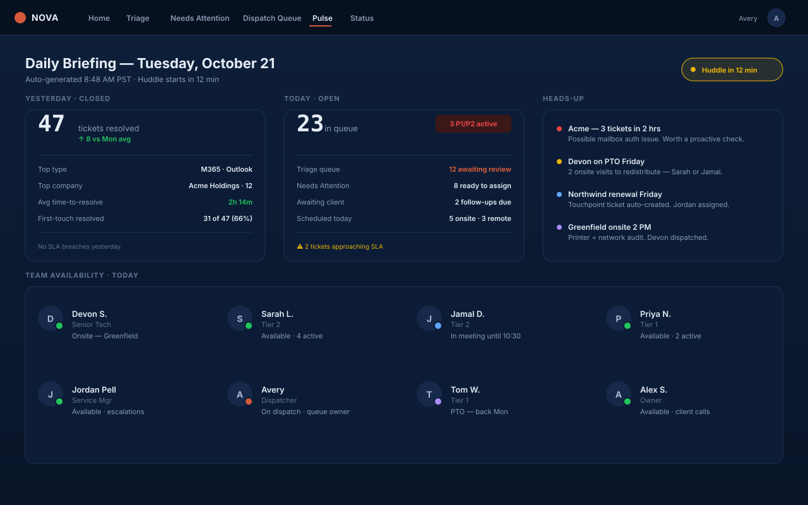

Pulse generates morning briefings, P1 alerts, end-of-day summaries, and per-tech DMs in your existing Microsoft Teams. Configurable card types per tenant. Your dispatcher reads, doesn't author.

Capacity, on-site schedule, escalations, talking points. Posted before standup.
New P1 ticket detected. @-mentions on-call. Full ticket context inline.
Ticket trending to breach in <1 hour. Posted to dispatch + tech assigned.
Tech hasn't updated a ticket in N hours. Direct message asking for status.
Queue depth exceeds team capacity. Suggests overflow assignments.
Tickets closed, hours billed, what slipped, what's hot tomorrow.
Per-client roll-up: tickets, satisfaction, repeat issues, outliers.
On-site visit running long. Dispatcher pinged with new ETA.
Define your own card. Trigger, query, format. Posted on schedule.
No more "lemme check three tabs." Pulse pulls last night's late tickets, today's on-site schedule, the team's expected capacity (PTO, training, sick), the escalation backlog, and anything trending toward breach — and writes a single Teams card that reads in 90 seconds.
We'll wire Pulse to your Teams channel during the demo. You'll see tomorrow's briefing get drafted live.